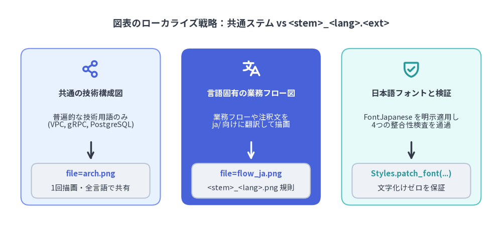

ローカライズ・ワークフロー
Drawlib は AI を活用した Markdown 翻訳と決定論的なビルド時検証を組み合わせることで、多言語ドキュメントサイトの構築と保守を効率化します。まずデフォルト言語（en/）で 概要 や システムアーキテクチャ の原稿を執筆し、対象言語（ja/）へ本文とキャプションを翻訳するだけで、共通の図表はサイト全体で1回のみ描画・共有されます。

Source Code
from drawlib.canvas import save, setup
from drawlib.icons import phosphor
from drawlib.lines import line
from drawlib.shapes import rectangle
from drawlib.smartarts import ChevronProcess
from drawlib.styles import Styles
from drawlib.text import text
setup(width=144, height=67)
text(
(72.0, 60.0),
"4-Step Multi-Locale Documentation & Render Pipeline",
style=Styles.DarkBold.patch(text_size=13.5),
)
pipeline = ChevronProcess(
style=Styles.Neutral,
text_style=Styles.DarkBold.patch(text_size=11.0),
description_style=Styles.Dark.patch(text_size=10.5),
corner_angle=65.0,
spacing=2.0,
flat_left_end=True,
)
pipeline.add("1. Author en/", description="Default Locale", style=Styles.PrimaryNeutral)
pipeline.add("2. AI Translate ja/", description="Prose & Captions", style=Styles.SecondaryNeutral)
pipeline.add(
"3. Parity Check",
description="4 Pre-Flight Rules",
style=Styles.PrimaryFlat,
text_style=Styles.WhiteBold.patch(text_size=11.0),
description_style=Styles.White.patch(text_size=10.5),
)
pipeline.add("4. Single Render", description="Shared Assets", style=Styles.Neutral)
pipeline.draw(xy=(6.0, 36.5), width=132.0, height=17.5)
cards = [
(21.3, Styles.Neutral, Styles.PrimaryBold, phosphor.file_text, "en/**/*.md", "Write prose &\ndrawlib blocks"),
(55.1, Styles.Neutral, Styles.SecondaryBold, phosphor.translate, "ja/**/*.md", "Translate prose;\nkeep shared code"),
(88.9, Styles.PrimaryNeutral, Styles.PrimaryBold, phosphor.shield_check, "AST & Skeleton", "Verify files, nav,\nskeleton & code"),
(122.7, Styles.SecondaryNeutral, Styles.SecondaryBold, phosphor.rocket_launch, "Build Once", "Shared PNGs +\nhreflang HTML"),
]
for cx, card_st, hdr_st, icon_fn, title, desc in cards:
line((cx, 36.0), (cx, 31.5), arrow_head="->", style=Styles.DarkBold)
rectangle((cx, 18.5), width=30.6, height=25.0, style=card_st.patch(shape_r=2.0))
icon_fn((cx, 26.5), width=4.8, style=hdr_st)
text((cx, 20.2), title, style=hdr_st.patch(text_size=11.0))
text((cx, 12.2), desc, style=Styles.Dark.patch(text_size=10.5))
save()
共通図と言語固有図の使い分け
クラウド構成図やシステムトポロジーに含まれる API Gateway・gRPC・PostgreSQL などの技術用語は言語を問わず共通であるため、多くの図表はそのまま全言語で共有できます。Drawlib ではファイル名の命名規則によって、図表の共有とローカライズを明確に使い分けます。
- 共通の技術構成図（
file=arch.png）:en/とja/の両方で同一のfile=名と同一の Python 描画コードを維持し、Markdown 側のcaption="..."のみを翻訳します。画像は1回だけレンダリングされ、すべてのロケールから共有参照されます。 - 言語固有の業務フロー図（
file=<stem>_<lang>.<ext>）: 業務プロセスの説明や注釈ラベルなど、図中のテキスト自体を日本語化したい場合は、非デフォルト言語側のファイル名を<stem>_<lang>.<ext>（例:en/のfile=localized_callout.pngに対してja/ではfile=localized_callout_ja.png）とし、ブロック内でFontJapaneseを明示的に適用します。

Source Code
from drawlib.canvas import save, setup
from drawlib.fonts import FontJapanese
from drawlib.icons import phosphor
from drawlib.lines import line
from drawlib.shapes import rectangle
from drawlib.styles import Styles
from drawlib.text import text
JP_STYLES = Styles.patch_font(
regular=FontJapanese.SANSSERIF_REGULAR,
bold=FontJapanese.SANSSERIF_BOLD,
)
setup(width=144, height=65)
text(
(72.0, 58.2),
"図表のローカライズ戦略：共通ステム vs <stem>_<lang>.<ext>",
style=JP_STYLES.DarkBold.patch(text_size=13.5),
)
# Card 1: 共通の技術構成図 (Neutral)
cx1 = 26.0
rectangle((cx1, 28.5), width=40.0, height=45.0, style=JP_STYLES.PrimaryNeutral.patch(shape_r=2.5))
phosphor.share_network((cx1, 45.2), width=5.4, style=JP_STYLES.PrimaryBold)
text((cx1, 38.2), "共通の技術構成図", style=JP_STYLES.DarkBold.patch(text_size=11.5))
text((cx1, 30.2), "普遍的な技術用語のみ\n(VPC, gRPC, PostgreSQL)", style=JP_STYLES.Dark.patch(text_size=10.5))
line((cx1, 24.2), (cx1, 19.0), arrow_head="->", style=JP_STYLES.DarkBold)
rectangle((cx1, 13.0), width=34.0, height=10.0, style=JP_STYLES.Neutral.patch(shape_r=1.8))
text((cx1, 15.0), "file=arch.png", style=JP_STYLES.PrimaryBold.patch(text_size=10.8))
text((cx1, 11.0), "1回描画・全言語で共有", style=JP_STYLES.Dark.patch(text_size=10.5))
# Card 2: 言語固有の業務フロー図 (Single PrimaryFlat Hero Focal Card)
cx2 = 72.0
rectangle((cx2, 28.5), width=40.0, height=45.0, style=JP_STYLES.PrimaryFlat.patch(shape_r=2.5))
phosphor.translate((cx2, 45.2), width=5.4, style=JP_STYLES.WhiteBold)
text((cx2, 38.2), "言語固有の業務フロー図", style=JP_STYLES.WhiteBold.patch(text_size=11.5))
text((cx2, 30.2), "業務フローや注釈文を\nja/ 向けに翻訳して描画", style=JP_STYLES.White.patch(text_size=10.5))
line((cx2, 24.2), (cx2, 19.0), arrow_head="->", style=JP_STYLES.WhiteBold)
rectangle((cx2, 13.0), width=34.0, height=10.0, style=JP_STYLES.Neutral.patch(shape_r=1.8))
text((cx2, 15.0), "file=flow_ja.png", style=JP_STYLES.PrimaryBold.patch(text_size=10.8))
text((cx2, 11.0), "<stem>_<lang>.png 規則", style=JP_STYLES.Dark.patch(text_size=10.5))
# Card 3: 日本語フォントとパリティ検証 (Neutral)
cx3 = 118.0
rectangle((cx3, 28.5), width=40.0, height=45.0, style=JP_STYLES.SecondaryNeutral.patch(shape_r=2.5))
phosphor.shield_check((cx3, 45.2), width=5.4, style=JP_STYLES.SecondaryBold)
text((cx3, 38.2), "日本語フォントと検証", style=JP_STYLES.DarkBold.patch(text_size=11.5))
text((cx3, 30.2), "FontJapanese を明示適用し\n4つの整合性検査を通過", style=JP_STYLES.Dark.patch(text_size=10.5))
line((cx3, 24.2), (cx3, 19.0), arrow_head="->", style=JP_STYLES.DarkBold)
rectangle((cx3, 13.0), width=34.0, height=10.0, style=JP_STYLES.Neutral.patch(shape_r=1.8))
text((cx3, 15.0), "Styles.patch_font(...)", style=JP_STYLES.SecondaryBold.patch(text_size=10.8))
text((cx3, 11.0), "文字化けゼロを保証", style=JP_STYLES.Dark.patch(text_size=10.5))
save()
多言語設定とパリティ検証ルール
ドキュメントのルートディレクトリに i18n.toml を配置し、対称なロケールディレクトリ（en/ と ja/）を用意することで多言語ビルドが有効になります。
default_lang = "en"
langs = ["en", "ja"]
Drawlib は図表スクリプトを実行する前に、設定された全ロケールに対して 4つの機械的パリティ検証 を自動実行し、翻訳ページの構造崩れや古い図表の残存を未然に防ぎます。
- ファイル構成パリティ:
ja/配下の相対.mdファイルパスがデフォルト言語en/と完全に一致していることを検証します。 - ナビゲーションバー・パリティ:
ja/navbar.mdのセクション構造・リンク数・正規化されたリンク先パスがen/navbar.mdと一致していることを検証します。 - Markdown スケルトン順序パリティ: 見出し（
H1〜H3）・本文ブロック・drawlibブロック・コードブロック（上記のtoml設定例など）の出現順序が完全に一致していることを検証します。 - Drawlib コードおよびステム命名パリティ: 共通ファイル名の図表は Python コードが1文字単位で一致していることを確認し、翻訳された図表には
<stem>_<lang>.<ext>の命名規則を強制します。
サイト全体の構成については 概要 を、共通図表の実装例については システムアーキテクチャ をあわせて参照してください。